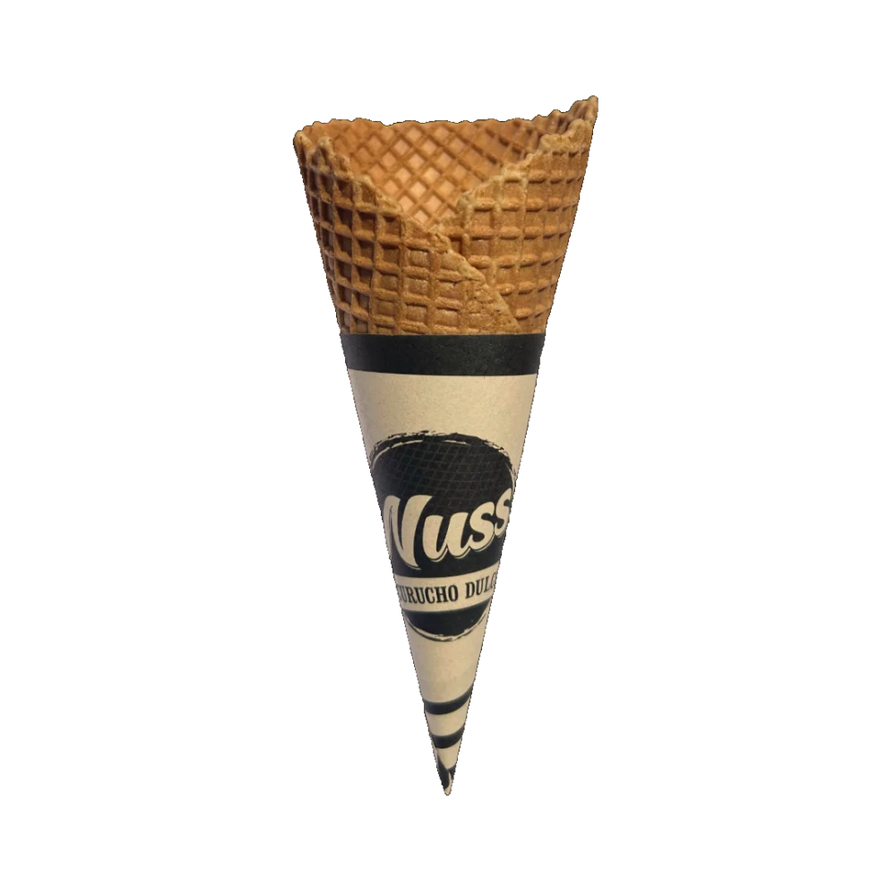
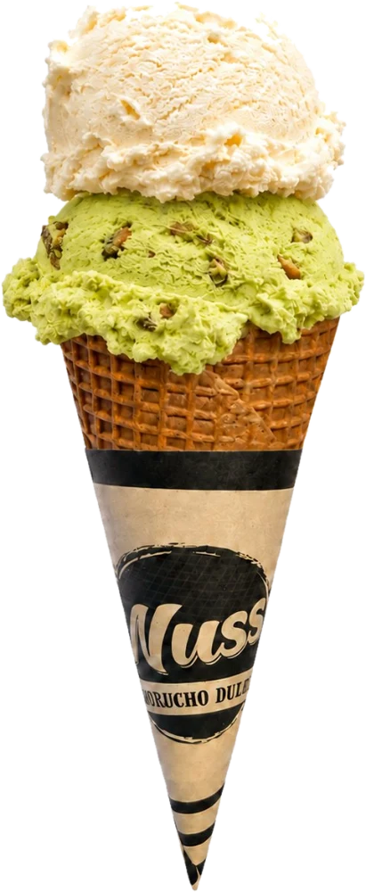
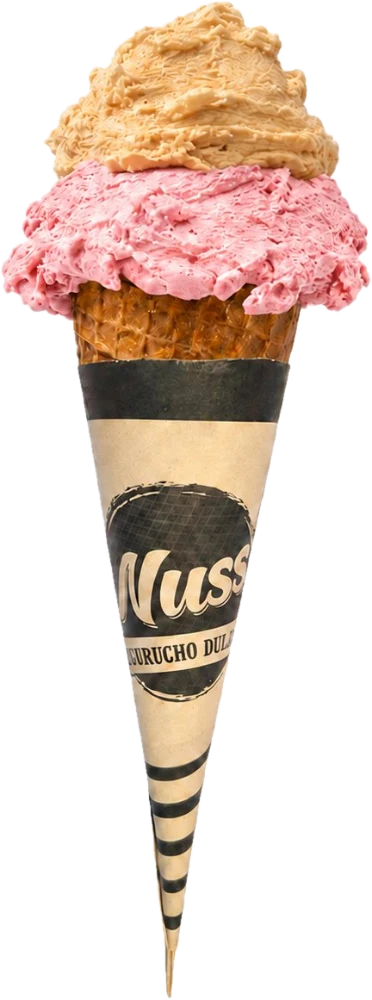
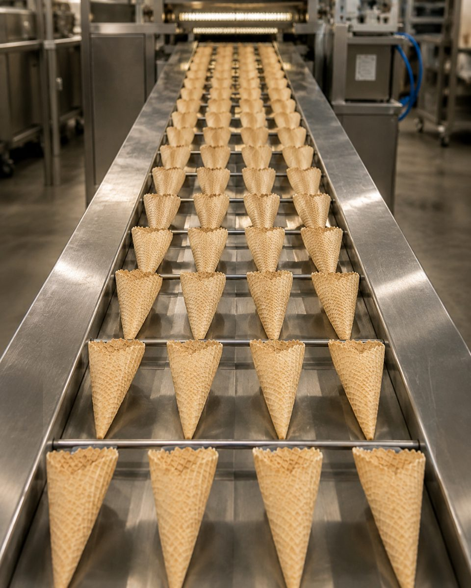
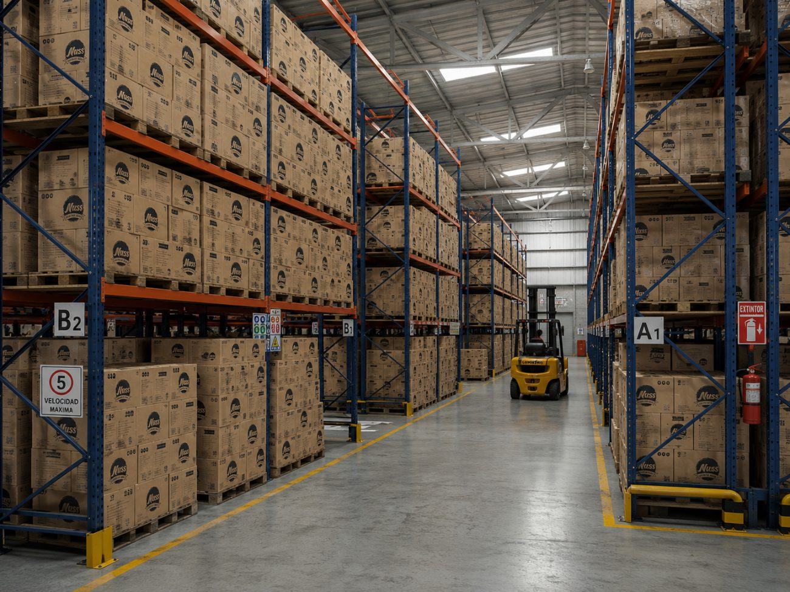
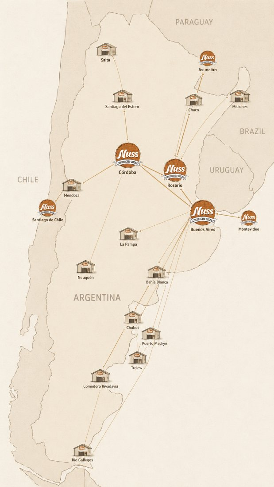

Cucuruchón
El clásico para cono de helado.
DiámetroØ 66 mm
Altura155 mm
Unidades240 u / caja
Opcional: conos personalizados
Cucuruchos, barquillos y capelinas artesanales para heladerías. Ricos, crocantes y resistentes — fabricados en Argentina con ingredientes seleccionados.





Producción Nuss · línea de fabricaciónLlegamos rápido y seguro a heladerías de todo el país gracias a nuestra logística terciarizada.
Maquinaria de última generación que asegura disponibilidad durante toda la temporada.
Procesos cuidados y materia prima de calidad: sabor y crocancia que se notan en cada cono.
Personalizamos los cucuruchos con el logo y los colores de tu heladería. Branding que se lleva en la mano.
Estos son nuestros tres más vendidos. Pero fabricamos mucho más: obleas, cubanones, conos y la nueva línea de pasta.
El clásico para cono de helado.

Canastita para copas y postres.
Cono recto y crocante, en tres medidas. Presentación en blister x 4.
Imprimimos tu logo y tus colores directamente en el cono. Un detalle que tus clientes se llevan en la mano y que hace crecer tu marca en cada helado.
Nos pasás tu marca y los colores de tu heladería.
Adaptamos el arte al formato del cucurucho y te lo aprobamos.
Fabricamos tu pedido personalizado y lo despachamos a tu local.

Distribuidos estratégicamente en distintos puntos del país, nuestros depósitos nos permiten mantener stock permanente y reponer sin demoras.
A esto se suma una red de distribuidores tercerizados en toda la Argentina y el Mercosur, para responder rápido a la demanda, estés donde estés.
Procesamos tu compra en 1 a 2 días hábiles junto al equipo de ventas.
Coordinamos con transportes terciarizados nacionales e internacionales.
Entregas entre 3 y 7 días hábiles, estés donde estés.

Desde nuestra sede central en Córdoba Capital, elaboramos cucuruchos, barquillos y obleas dulces con pasión artesanal. Nuestra filosofía equilibra calidad, precio, capacidad, sabor, servicio, confiabilidad y sustentabilidad.
Contamos con maquinaria de última generación junto a Raúl Nuss Maquinarias, lo que nos mantiene a la vanguardia de la industria y nos permite acompañar el crecimiento de cada heladería.

Contactás a nuestro equipo de ventas por WhatsApp o el formulario de esta página y te asesoramos según el volumen de tu heladería. Te armamos un pedido a medida.
Sí. Procesamos en 1 a 2 días hábiles y entregamos en 3 a 7 días hábiles en toda Argentina, con cobertura también en el Mercosur, a través de transportes terciarizados.
Sí, es nuestro gran diferencial. Imprimimos el logo y los colores de tu heladería directamente en el cono. Consultanos por las cantidades mínimas para personalización.
Cucuruchones (grande y mini), capelinas y barquillos en medidas N° 35, 40 y 45. Todos elaborados de forma artesanal con ingredientes seleccionados.
Sí. Nuestra maquinaria de última generación nos permite sostener alta capacidad productiva y garantizar disponibilidad durante toda la temporada.
Escribinos y accedé a nuestra red de distribuidores. Te respondemos a la brevedad.